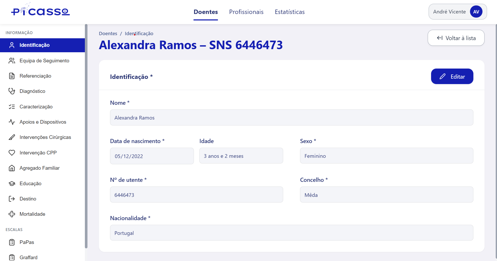
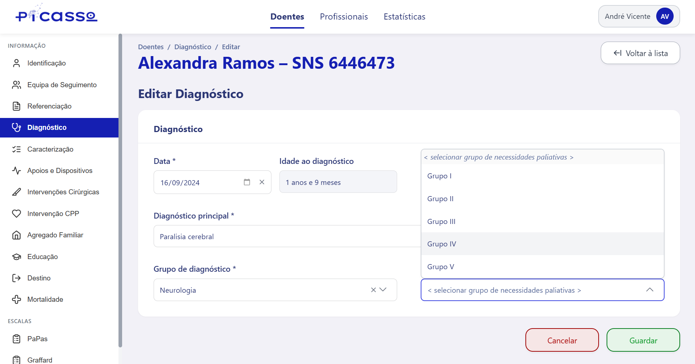
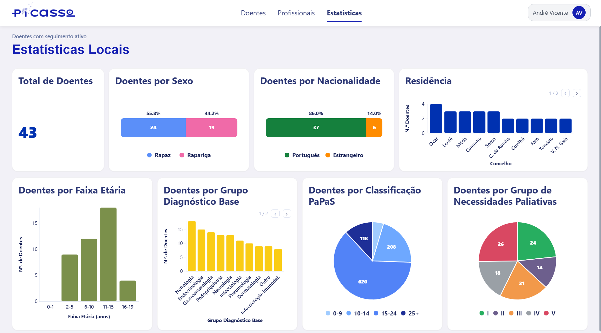

Platform Functionalities
An overview of the main functionalities of the PiCaSSo digital platform
Patient Data Entry
Healthcare professionals can enter and manage patient data through a structured forms, organized into clinical categories.

Patient identification form with category sidebar

Filling out a patient's diagnosis form
PaPaS Scale
The platform provides an integrated interface for filling out the PaPaS scale, a tool for identifying pediatric palliative care needs. The score is computed automatically from the entered responses.

Filling out the PaPaS scale for a patient

Automatic calculation and display of the final PaPaS score
Statistics Dashboard
The platform offers a statistics dashboard, enabling healthcare professionals to explore aggregated data and trends from their patient population at a glance.

Aggregated statistics and visualizations for the patients
Platform Demonstration
Here is a video demonstration of the PiCaSSo platform and its features.